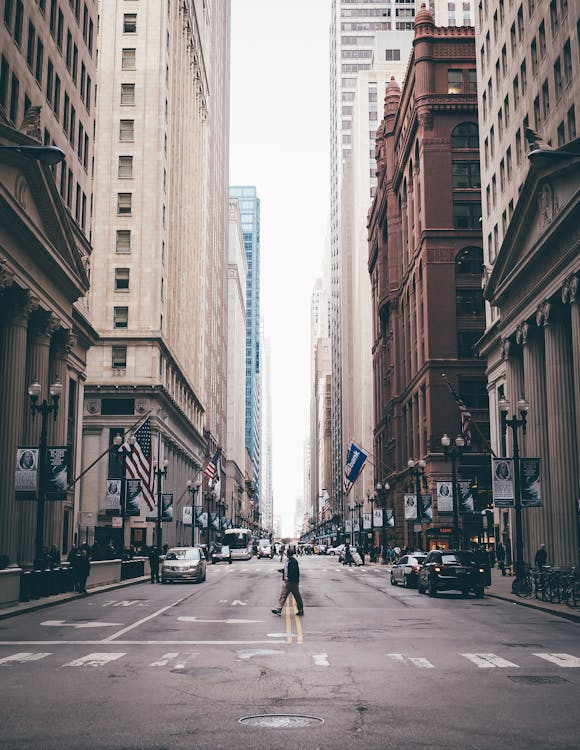
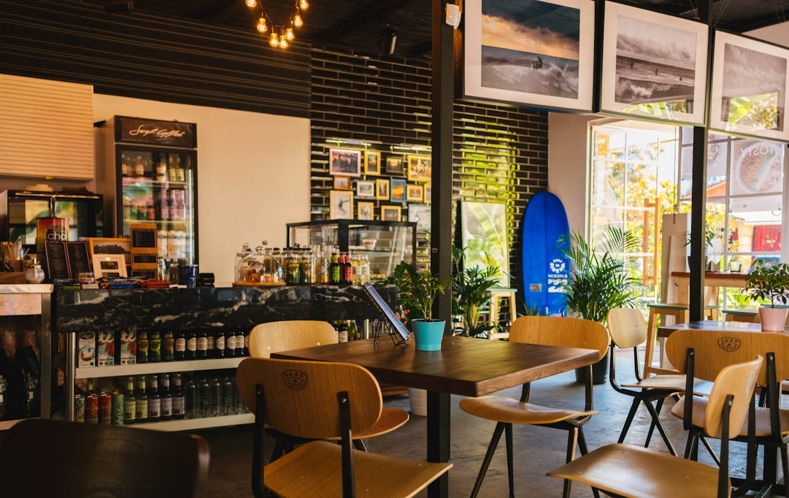
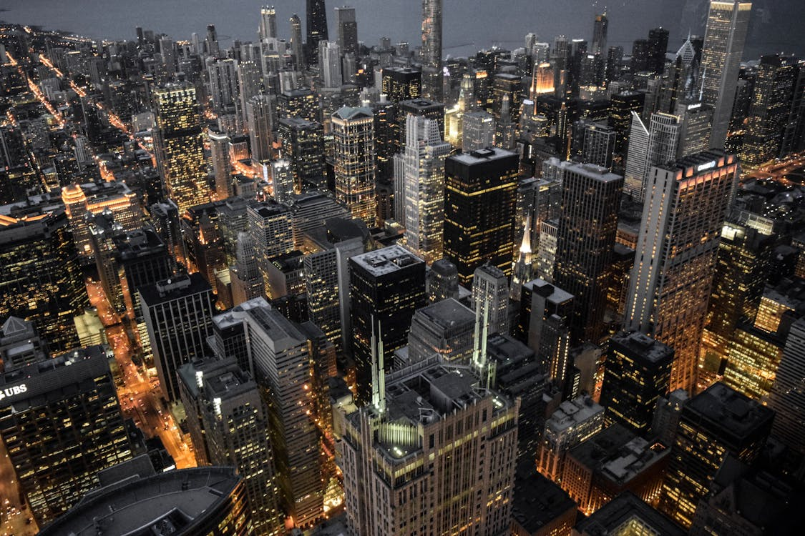
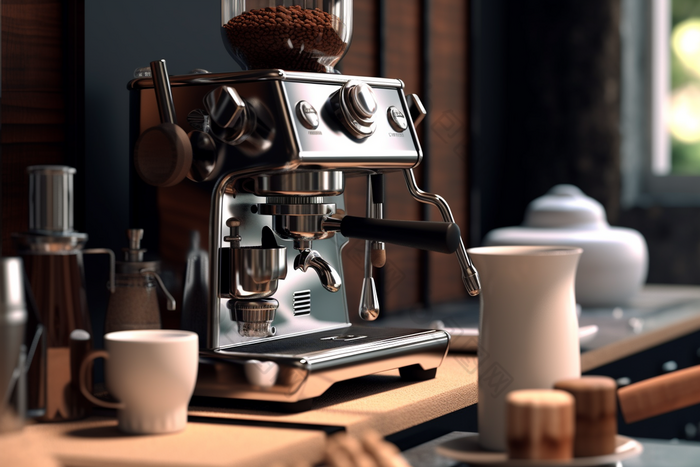

寻找最佳"第三空间"
宿舍太吵，图书馆没座？这几家校园周边的咖啡馆，或许是你赶Due的最佳避难所。



本月推荐榜单

1. 知行书屋 Cafe
适合独处 · 极其安静
环境：拥有整面墙的书架和独立的阅读灯。BGM多为轻音乐或白噪音，非常适合需要高度集中注意力的复习周。
电源：每个座位均配备插座与USB接口。
推荐：冰美式无限续杯，提供简餐。
2. 灵感集社 Lab
适合小组讨论 · 创意氛围
环境：工业风装修，空间开阔。设有专门的白板讨论区，适合做Group Project或社团会议。氛围相对轻松活跃。
电源：长桌区域配备排插。
推荐：特调脏咖啡（Dirty），巴斯克蛋糕。